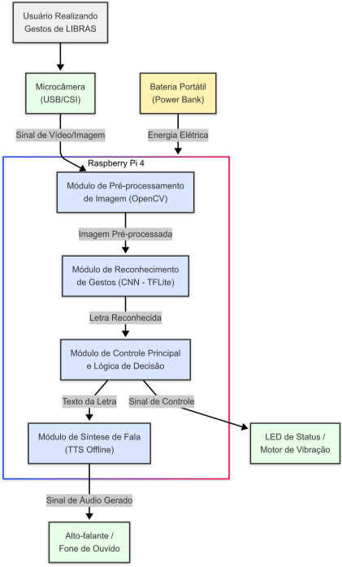

Marco Inicial: Hoje finalizamos a proposta e iniciamos oficialmente o blog do projeto. Este é o primeiro passo de uma jornada que promete revolucionar a comunicação entre pessoas surdas e ouvintes através da tecnologia.
